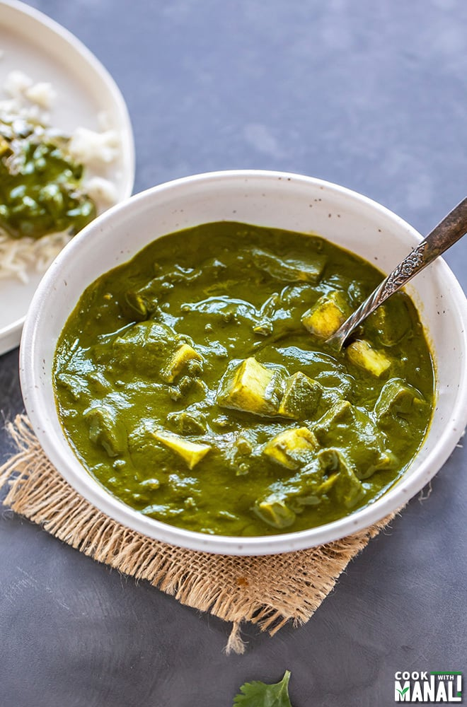

Butter Chicken

- 500g boneless chicken, cut into cubes
- 1 cup yogurt
- 1 tbsp ginger-garlic paste
- 1 tsp red chili powder
- 1 tsp garam masala
- 1/2 tsp turmeric powder
- Salt to taste
- 2 tbsp butter
- 1 onion, finely chopped
- 2 tomatoes, pureed
- 1/2 cup cream
- Fresh coriander leaves for garnish
-
In a bowl, marinate chicken with yogurt, ginger-garlic paste, red
chili powder, garam masala, turmeric powder, and salt. Refrigerate for
2 hours.
-
Heat butter in a pan. Add chopped onions and sauté until golden brown.
- Add marinated chicken and cook until tender.
- Pour in tomato puree and simmer for 10 minutes.
- Stir in cream and cook for another 5 minutes.
- Garnish with fresh coriander leaves.
- Serve hot with naan or rice.
Palak Paneer

- 200g paneer, cubed
- 2 bunches spinach, washed and chopped
- 1 onion, chopped
- 2 tomatoes, chopped
- 1 green chili, chopped
- 1 tbsp ginger-garlic paste
- 1 tsp cumin seeds
- 1/2 tsp turmeric powder
- 1 tsp garam masala
- 1/2 cup cream
- Salt to taste
- 2 tbsp ghee or oil
-
Blanch spinach in boiling water for 2 minutes. Drain and blend to a
smooth paste.
- Heat ghee/oil in a pan. Add cumin seeds and let them splutter.
-
Add chopped onions, green chili, and ginger-garlic paste. Sauté until
onions turn golden brown.
- Add chopped tomatoes and cook until they soften.
-
Stir in spinach puree, turmeric powder, garam masala, and salt. Simmer
for 5 minutes.
- Add cream and paneer cubes. Cook for another 2-3 minutes.
- Palak Paneer is ready to serve.
- Serve hot with naan or rice.
Chicken Biryani

- 500g chicken, cut into pieces
- 2 cups basmati rice, soaked for 30 minutes
- 1 large onion, thinly sliced
- 2 tomatoes, chopped
- 1/2 cup yogurt
- 1/4 cup chopped mint leaves
- 1/4 cup chopped coriander leaves
- 2 tbsp ginger-garlic paste
- 1 tsp red chili powder
- 1/2 tsp turmeric powder
- 1 tsp garam masala
- Whole spices: cloves, cardamom, cinnamon
- Salt to taste
- 2 tbsp ghee or oil
-
Heat ghee/oil in a large pot. Add whole spices and sauté until
fragrant.
- Add sliced onions and cook until caramelized.
- Add ginger-garlic paste and sauté until raw smell disappears.
-
Add chopped tomatoes, red chili powder, turmeric powder, and garam
masala. Cook until tomatoes are mushy.
- Add chicken pieces and cook until they turn white.
-
Stir in yogurt, mint leaves, and coriander leaves. Cook for 5 minutes.
-
Layer soaked rice over the chicken mixture. Pour enough water to cover
the rice.
-
Cover and cook on low heat until rice and chicken are fully cooked.
- Fluff gently with a fork and serve hot.